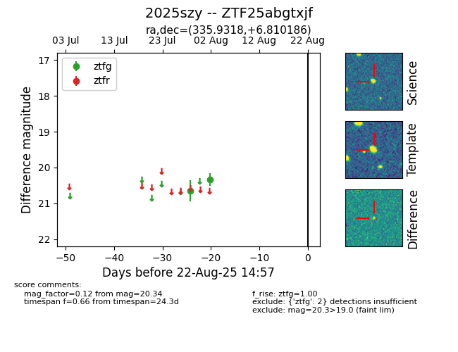

Target 2025szy at 2025-08-21 09:16, see:
FINK: fink-portal.org/ZTF25abgtxjf
Lasair: lasair-ztf.lsst.ac.uk/objects/ZTF25abgtxjf
ALeRCE: alerce.online/object/ZTF25abgtxjf
TNS: wis-tns.org/object/2025szy
YSE: ziggy.ucolick.org/yse/transient_detail/2025szy
alt names
ZTF25abgtxjf (ztf,alerce)
2025szy (tns,yse)
coordinates:
equatorial (ra, dec) = (335.9318,+6.81019)
galactic (l, b) = (71.0144,-40.71984)
photometry
last ztfg=20.34
2 ztfg detections
